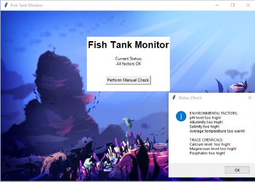
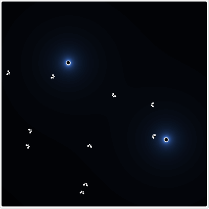
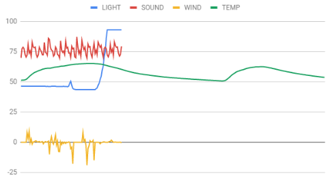

Home
Portfolio
About Me
This is my Portfolio Page!
Project 1.1.9: Applegate's Ice Cream

For our first project, my group created an ice cream shop. In this game, customers are presented with 6 different flavors of ice cream and are prompted by what flavor they would like and the number of scoops they want!
Project 1.2.5: Halloween Dropper

For our second project, my group made a Halloween Dropper game. In this game, you use the A and D keys to control the movement of the basket to catch candy corn, there is a 20s timer and the score of how many candies are kept
Project 1.3.1: Sandwich Shop
For our third project, we made a Sandwich Shop game where the player takes orders makes sandwiches with specific ingredients, and gets coins for giving them to the customer
Project 2.1.6: Fish Tank

For our fourth project, we looked for security breaches and issues within a fish tank monitoring program. We debugged and fixed issues to solve the security problems
Project 4.1.4: Simulations

For our fifth project, my partner and I investigated a moth simulation in Netlogo and clarified its objectives, real-world issues, and representation, how the simulation was similar and accurate to the real world, and what could be fixed
Project 3.1.6: Simulations

For our sixth project, We had to figure out where the rover was, based off of light, sound, wind, and temperature. The data suggests that the rover landed in the Rocky Mountains. All of the data that the rover collected mathced up with the patterns that align with the Rocky Mountains